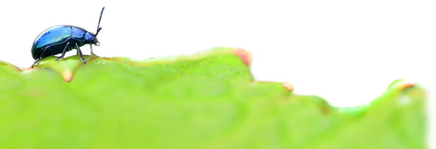

¿QUÉ HEMOS APRENDIDO?
SÍNTESIS DE SABERES BÁSICOS
Realizad, siguiendo el esquema que aparece en esta página, las siguientes preguntas:
- ¿En qué consistía la tarea?
- ¿Qué pasos he seguido para llevarla a cabo?
- ¿Cómo podría mejorar la próxima vez que haga un póster?
- ¿Cómo me siento con el resultado final?
- ¿Qué aspecto positivo cabe destacar de nuestro trabajo en equipo?
EVALUACIÓN
Evaluad tanto vuestro trabajo en equipo, y vuestro grado de satisfacción con el proceso y el resultado.
- ¿Hemos planteado adecuadamente las tareas?
- ¿Qué dificultades hemos tenido para resolver los desafíos surgidos?
- ¿Qué aspectos positivos cabe destacar de nuestro trabajo en equipo?
UN PÓSTER NATURAL
Seguid los pasos que se indican a continuación para que vuestro póster resulte atractivo.
- Elegid el soporte en el que pensáis realizar vuestro póster: físico o digital.
- Elaborad un borrador que ilustre cómo vais a presentar toda la información, para que quede proporcionado en el póster.
- Incluid la autoría y las fuentes que habéis consultado, tanto las imágenes como en los textos.
- Organizad la presentación de manera que sea coherente y fácil de lectura.
- Revisad el póster definitivo, asegurándoos de que resulta vistoso y legible.

Escarabajo en una hoja